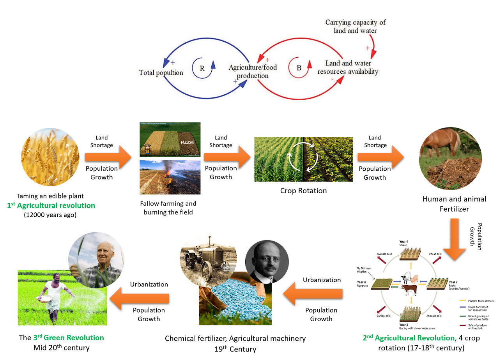
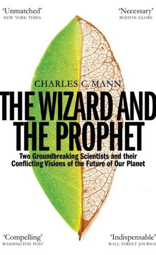

The Big Ratchet
The 4th agricultural revolution
From my earlier blog, “The 4th agricultural revolution.” The text below retains the original discussion and projections.
12000 years ago, humans managed to manipulate the environment and extract more food with less effort which lead to growth in population, however after a while, the demand for food exceeded the food production and limited the growth, a famous pattern known as the limit to growth archetype (figure below). But each time with an innovation we managed to solve the problem and extract more food for the growing population until a new bigger obstacle emerged.
The below figure shows the sequence of the obstacles we faced in feeding the world and the innovations that helped to overcome them in the past 12000 years based on the book: The Big Ratchet: How humanity Thrives in the face of natural crisis.

You can listen to the Farsi Summary of the book on the original page.
By the year 2050, the human population reaches 9.6 billion, and the global food demand will be doubled relative to 20 50, moreover, the water resources are depleted (see the water stress map on the original page) and climate change will adversely impact food production in many parts of the world. All of these means that we are facing the biggest human challenge to feed the hungry world from the beginning of this cycle.
Editorial note: “relative to 20 50” is retained as written; the comparison year is unclear in the original post.
There are two approaches Some believe that we have reached the earth carrying capacity and we should stop exploiting the resources the way we used to (prophet), and another group believes that we can overcome this issue by disruptive innovation (Wizards). The book “The Wizard and the Prophet: Two Remarkable Scientists and Their Dueling Visions to Shape Tomorrow’s World” provide interesting insights on the arguments of each side.

This episode of Freakonomics Radio is an interesting interview with the author and a quick summary of the book.